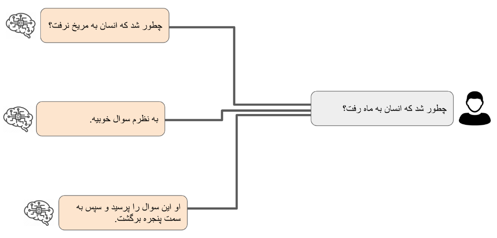

Alignment: جهت دهی
در نوشته قبلی در مورد مدلهای زبانی بزرگ و چگونگی کارکرد آنها صحبت مختصری کردیم. توجه اصلی در آنجا به خود مدل بود و اشاره کوچکی هم به بحث جهتدهی داشتیم. در اینجا به بررسی بیشتر روشهای جهتدهی میپردازیم. طبق نظر بسیاری متخصصین هوش مصنوعی، برتری ChatGPT به مدلهای زبانی همزمان خود بیش از هر چیز بابت جهتدهی بهتر آن بوده. در غیر اینصورت تمامی مدلهای مشابه و پیشرفته زبانی موجود ساختار و دادگان بسیار مشابهی داشتند. در اینجا ابتدا اندکی بیشتر وارد جزئیات روشهای رایج برای جهتدهی به مدلهای زبانی میشویم و دلیل برتری نهایی ChatGPT را بررسی میکنیم.
قوانین منطقی
همانطور که در بحث قبلی مطرح شد، یکی از روشهای مورد استفاده در مدلهای زبانی قدیمیتر، بررسی دقیق ساختار زبان و یافتن روابط منطقی بین اجزای جملات برای پیدا کردن جواب مناسب بر مبنای آنهاست. چنین روشی نیازمند شناخت دقیق از قواعد زبان مورد بحث بوده و در عمل بسیار پیچیده و زمانبر میباشد. از سوی دیگر در جایی که هدف نهایی ساختن یک برنامه ساده، مثل یک دستیار هوش مصنوعی با قابلیتهای محدود، باشد استفاده از این روش میتواند بسیار سریع و کارآمد باشد. تواناییهای دستیارهای زبانی مانند Alexa و Siri به میزان زیادی با این روش طراحی شدهاند.
به بیانی خیلی ساده، چنین تواناییهایی معمولا بر اساس تطبیق دادن ورودی ها یا درخواستهای کاربران با الگوهایی از پیش طراحی شده است. برای کمک به درک بهتر این موضوع بیایید فرض کنیم که شما در حال طراحی دستیاری مانند Alexa و Siri هستید. در آغاز میخواهیم توانایی جواب دادن به درخواستهایی مثل "ساعت را بگو."، "دوباره ساعت رو بگو برای من." و مشابه اینها را برای این برنامه طراحی کنیم. با نگاهی دقیقتر به این جملات و با در نظر گرفتن ساختار جملات در زبان فارسی، میتوان الگو مربوط به این درخواستها را به راحتی پیدا کرد. شکل زیر الگو سادهای برای دومثال قبلی است:
در این الگو جملاتی شبیه مثالهای بالا را به پنج بخش تقسیم کردهایم. قطعات زرد رنگ بخشهایی از جملات هستند که باید دقیقا تطبیق داده شوند. گاهی به آنها کلیدواژه های مهارت میگوییم. قطعات آبی رنگ میتوانند سایر کلمات باشند یا جای خالی. مثلا دو مثال بالا اینگونه در الگو ما تطبیق داده میشوند:

برنامه دستیار هوش مصنوعی ما جملاتی که با این الگو تطبیق داده شوند را تشخیص داده و سپس جواب های مرتبط را تولید خواهد کرد. به همین سادگی ما مهارت جواب دادن به ساعت پرسیدن را به دستیار هوش مصنوعی خود اضافه کردیم. مشابه همین الگو را میتوان برای مهارتهای دیگری مثل پرسش درباره وضع هوا، برنامه حرکت قطارها و یا حتی سفارش پیتزا به این دستیار هوش مصنوعی اضافه کرد. برنامه هوش مصنوعی ما درخواستهای ورودی را با تک تک این الگوها امتحان کرده و در صورت تطبیق الگو برنامه مرتبط با آن را اجرا میکند تا جواب مناسب را تولید کند. به راحتی میتوان دید که این روش به مرور زمان و با افزودن مهارتهای بیشتر پیچیده و حجیم خواهد شد. گذشته از آن، با توجه به پیچیدگیهای زبانی درست کردن الگویی که توانایی تطابق با روشهای مختلف بیان یک مفهوم را داشته باشد، پیچیدگی به مراتب بیشتر خواهد شد. به عنوان مثال یک بار دیگر به مهارت پاسخ دادن به پرسیدن زمان که در بالا به آن پرداختیم برگردیم: الگویی که در بالا پیدا کردیم دو جملهای که اول به آنها اشاره کردیم را پوشش میدهد. ولی اگر کسی پرسید "ساعت چنده؟" چطور؟
لازم است اشاره کنیم که در عمل الگوهای طراحی شده برای این مدل از دستیارهای هوش مصنوعی از سازوکارهای منطقی به مراتب پیچیدهتر از چیزی که در الگوی بالا نشان دادیم پیروی میکنند. مثلا به جای یک قاعده ساده که ما با تصویر بالا نشان دادیم، چند مرحله تصمیم گیری با توجه به بخشهای مختلف را دارند. همچنین با توجه به ساختار زبان و شناسایی فعل و فاعل و سایر بخشهای دستوری جمله درک بهتری از ارتباط معنایی کلیدواژههای هر مهارت دارند. با این حال مثالهای بالا شمایی کلی از مشکل پیش رو را تصویر میکنند.
با وجود تمامی این پیچیدگیها، دستیارهای هوش مصنوعی که با این قوانین طراحی شدهاند همچنان ممکن است به راحتی نتوانند تمامی روشهای ممکن برای پاسخگویی به درخواستها را پوشش دهند. از سوی دیگر نیاز به متخصصینی که تکتک درخواستهایی که امکان دارد از این دستیارها پرسیده شود را بررسی کرده و الگوهای آنها را استخراج کرده باشند در عمل ناممکن است. به همین دلیل به محض پرسیدن سؤالهایی با اندکی پیچیدگی از Siri یا Alexa با جوابهایی از پیش طراحی شده مواجه میشویم که به ما میگوید هیچ پاسخی برای سوال ما ندارند. این اتفاق معمولا زمانی میافتد که درخواست ما با هیچ یک از الگوهای از پیش طراحی شده در برنامه آنها تطابق داده نشود. حال یا به خاطر اینکه مهارت موجود به آنها اضافه نشده و یا اینکه طرز بیان ما به درستی با الگوهای موجود تطابق ندارد.
یادگیری ماشین
پیچیدگیهای طراحی دستی الگوها باعث شد که پژوهشگران به استفاده از روش های محاسباتی آماری رو بیاورند. در اینگونه روشها خود کامپیوترها با بررسی دادههای ورودی الگوهای موجود را پیدا میکنند. به عبارت دیگر خودشان به صورت خودکار مهارتی را یاد میگیرند. از این رو به آنها اصطلاح یادگیری ماشین داده شده است. در مورد دستیارهای هوشمند و چتباتها ما مدل زبانی را آموزش میدهیم که میتواند با دیدن بخشی از جمله بقیه آن را پیش بینی کند. همانطور که در مقاله قبل گفتیم، در مورد بسیاری از عبارتها پیش بینی دقیق کلمات بعدی غیر ممکن است. مثلاً عبارت "من به بازار رفتم و …" را در نظر بگیرید. این جمله را به هزاران راه میتوان ادامه داد که همگی آنها میتوانند درست باشند: "من به بازار رفتم و کباب خوردم"، "من به بازار رفتم و یک دیگ مسی خریدم" و هزاران جمله دیگر همگی گزینههای مناسبی برای ادامه این عبارت هستند. این جاست که جادوی انبوه دادهها به کار میآید. در عمل مدل زبانی ما روی میلیونها صفحه متن که از منابع مختلفی مانند صفحات اینترنتی یا کتابهای دیجیتال آموزش داده شده. در نتیجه احتمال جملهای مانند "من به بازار رفتم و کباب خوردم" را بسیار بیشتر از جمله "من به بازار رفتم و پنگوئنها در لندن بارسلونا را خریدند" محاسبه خواهد کرد. هر چقدر دادههای بیشتری در آموزش زبان استفاده شده باشد، مهارت مدل زبانی در ساختن جملاتی بهتر و دقیق تر بیشتر خواهد شد.
برای جزئیات بیشتر در مورد طرز کار مدلهای زبانی مدرن، مقاله قبلی را ببینید.
یادگیری از روی نمونههای مرتبط
بعد از رسیدن به مدل زبانی قابل قبول قدم بعدی نزدیکتر کردن آن به کاربرد نهایی مورد نظر است. با توجه به اینکه مدلهای زبانی معمولا روی انبوهی از دادههای مختلف آموزش داده شده اند، آنها درک خوبی از ساختارهای زبان داشته و توانایی تولید جملاتی متناسب با ورودی را دارند. ولی از آنجا که درک کاملی از درخواستهای ممکن ندارند ممکن است که نتوانند به درستی به جستارهای (query) ورودی پاسخ دهند. به عنوان مثال مکالمه خیالی زیر بین یک کاربر و مدل زبانی جهت داده نشده را در نظر بگیرید:
در اینجا کاربر سوالی پرسیده و ما سه نمونه منطقی که یک مدل زبانی میتواند در ادامه آنها تولید کند را نشان دادهایم. از نظر یک مدل زبانی هر سه پاسخ ممکن در سمت چپ میتوانند ادامه مناسبی برای پرسش کاربر باشند، ولی هیچ یک از اینها پاسخی که کابر انتظار آن را داشته باشد نیستند. راستش هیچ یک اصلا جوابی نیستند و تنها ادامهای برای جمله کابر هستند. چطور باید کاری کنیم که دستیار هوش مصنوعی به جای فقط ادامه دادن جمله ما جوابی برای آن تولید کند؟
برای پاسخ به سوال بالا بهتر است نگاهی دوباره به پیکره دادههای مدل زبانی بیندازیم. همانطور که گفتیم این مدلها بر روی انبوه دادههایی از اینترنت و کتابها و صفحات اخبار آموزش داده شده اند. از این رو طرز ساخت جملات آنها نیز بسیار شبیه به این صفحات است. ولی اگر ما آن را روی دیالوگ بین دو نفر آموزش داده بودیم، مدل یاد میگرفت که به جای دنبال کردن جمله باید به آن جواب دهد. دیالوگ زیر بین دو نفر که کمابیش پیرامون موضوع مثال قبلی است را در نظر بگیرید:
حال فرض کنید که ما این مکالمه را به صورت متن زیر در آوردیم:
اگر ما این ورودی را به مدل زبانی که یادگیری خوبی داشته بدهیم میتواند تشخیص دهد که این مکالمهای بین دو نفر است که نفر دوم (که ما اینجا دستیار نامیدیم) به سوالات نفر اول پاسخ میدهد. نکته کلیدی این ادعا کیفیت بالای یادگیری است. مدلی که برای دیالوگ دو طرفه به این صورت طراحی شده باشد باید مثالهای مشابه بسیار زیادی دیده باشد. و این دقیقا یکی از نکات مهم در ساخت یک دستیار هوشمند متمایز از یک مدل زبانی معمولی است. در عمل دادههای مشابه این در اینترنت به فراوانی یافت میشوند. مکالمات رد و بدل شده در وبسایتها وشبکههای اجتماعی مانند توییتر و ردیت شباهت بسیاری به مثال بالا میتوانند داشته باشند. حتی از آن بهتر اگر ما از دو نفر بخواهیم که با هم دیالوگی داشته باشند که در آن یک نفر نقش کاربر و دیگری نقش دستیار را داشته باشد نتایجی به مراتب بهتر خواهیم گرفت.
در اینجا باید لحظه ای مکث کرده و نگاهی به هزینه و کیفیت دادههای در دسترس بپردازیم. مواد اولیه در ساخت مدلهای زبانی هر دادهای است که به آن دسترسی داشته باشند. گرفتن دادههای دیجیتال کتابها و صفحات اینترنت در عمل هزینه بسیار پایینی دارد. در نتیجه معمولا اولین مرحله برای ساخت یک دستیار هوشمند آموزش مدلی با انبوه دادههایی است که از این طریق به دست میآوریم. ولی با توجه به اینکه این متنها دقیقا با چیزی که ما از یک دستیار انتظار داریم مطابقت ندارند مدل ما فاصله زیادی تا یک دستیار هوش مصنوعی با کیفیت دارد. معمولا در این مرحله مدل به درکی کلی از قواعد زبان و معنای کلمات و جملات میرسد. ولی توانایی زیادی در پاسخ به سوالات ما ندارد.
در مرحله بعد دادههایی که از مکالمه بین افراد جمعآوری کردهایم را برای آموزش مدل به کار میگیریم. این دادهها از منابع موجود از مکالمه افراد در وبسایتهای اینترنتی، مثل صفحات پرسش و پاسخ و شبکههای اجتماعی، نسبتا کم هزینه می باشد، ولی همچنان تطابق کامل با یک دستیار هوش مصنوعی ندارد. به خاطر همین مقدار کمی داده که از در آن دو نفر نقش دستیار و کابر را بازی میکنند را در نهایت برای افزایش کیفیت به دادهها اضافه میکنیم.
بعد از جمعآوری این دادهها نوبت آموزش مدل است. در مورد طرز کار مدلهای زبانی در مقاله قبل توضیحاتی دادیم. به طور خلاصه مدل ما رشتهای از نشانههای جملات را درست میکند و در هر مرحله محتملترین نشانه ممکن از بین واژگان را انتخاب میکند. سپس این کار را ادامه میدهد تا به انتهای پاسخ برسد.
این روش برای هر ورودی کابر پاسخی را تولید میکند که بیشترین احتمال را داشته باشند که جواب مناسبی باشد. با وجود اینکه این روش در تئوری هیچ اشکالی ندارد، ولی در عمل مدل را به سمتی میبرد که جملاتی بسیار سطحی و با ارزش اطلاعاتی پایین تولید کنند. اتفاقی که در اینجا میافتد این است که مدل ما پس از دیدن هزاران مکالمه تشخیص میدهد که جملاتی هستند که به احتمال زیادی میتواند آنها را در پاسخ به خیلی از سوالات استفاده کند. این جملات تکراری با اینکه احتمال زیادی دارد جوابی مناسب باشند ولی در عمل بار معنایی خاصی ندارند و بی مصرف هستند. به عنوان مثال جملات "من در این مورد چیزی نمیدانم" و "چقدر چیزی که گفتی جالب بود" را در نظر بگیرید. یک دستیار هوش مصنوعی میتواند از همین دو جمله برای پاسخ به هزاران جستار استفاده کند. مثلا هر کجا که سوالی پرسیدیم پاسخ جمله اول باشد و در غیر این صورت جمله دوم. از نظر یک مدل زبانی که روی دادههای مکالمه آموزش دیده شده احتمال این جملات کم نیستند، چون ممکن است مشابه آنها را در پاسخ به هزاران سوال دیده باشد. در مقابل پاسخهای مبسوط و خیلی خاص که اشاره مستقیم به سوال مورد نظر دارند کمتر دیده شده یا حتی در دادگان وجود نداشته. به همین خاطر احتمال تولید آن توسط دستیار هوش مصنوعی پایین تر است. در اینجا به مشکل تقابل بین ارزش داده و احتمال بالای پاسخ از دید یک مدل زبانی میرسیم که یکی از مشکلات اساسی سر راه دستیارهای هوش مصنوعی بود. یکی از ابداعات مهم OpenAI برای برطرف کردن این مشکل استفاده هوشمندانه از روش RLHF بود که در ادامه به آن میپردازیم.
پاداش
شرکت OpenAI از بدو تاسیس تمرکز بر استفاده از روشهای یادگیری تقویتی (reinforcement learning) در هوش مصنوعی داشت. پس از ارائه ترانسفورمرها (که در مقاله قبلی به آن پرداختیم) OpenAI به سرعت ابتکار عمل را در استفاده از آنها در دست گرفته و با افزایش چندین برابری اندازه مدل و دادگان آنها سری مدلهای GPT را به بازار عرضه کرد. در نتیجه طبیعی بود که برای جهتدهی نیز به سراغ روش های یادگیری تقویتی برود.
در یادگیری تقویتی مدل به صورت موجودی در یک محیط عمل میکند که انتخابهایی دارد. این موجود (کارگزار هوش مصنوعی) دنبالهای از این انتخابها را انجام میدهد و در ازای آن پاداش یا مجازاتی دریافت میکند. این پاداش میتواند در ازای هر انتخاب باشد یا به صورت گسسته و با فاصلههای زمانی نامنظم. نمونه بسیار رایج چنین دستیار هوش مصنوعی مدلهایی هستند که در بازیها از آنها استفاده میشود. مثلا شطرنج. مدل هوش مصنوعی که شطرنج بازی میکند در هر مرحله میتواند از بین حرکتهای در دسترس برای مهرههای خود یکی را انتخاب کند. نتیجه این انتخاب حرکت مهره روی صفحهبازی و سپس حرکت طرف مقابل است. اگر در این بین یکی از مهرههای حریف از دور خارج شود، یا حتی بهتر از آن حریف کیش یا مات شود، مدل پاداشی دریافت میکند (معمولا عددی متناسب با ارزش دستاورد). در مقابل اگر یکی از مهرهها از دست برود یا حریف کیش و مات کند مجازاتی متناسب با آن (باز هم یک عدد ولی به احتمال زیاد منفی). پس از انجام (یا مشاهده) هزاران یا میلیونها بازی، مدل از کنار هم قرار دادن موقعیتهایی که در آنها بوده، انتخابش و پاداش مرتبط با آن، درکی کلی از بازی پیدا کرده و سعی در بیشینه کردن پاداش میکند. با ادامه این فرایند مدل حرکات بهتری را انجام داده و بازی بهتری ارائه میدهد. در ادامه با مشاهده پاداش این بازیها از آن در راستای بهتر کردن هر چه بیشتر بازی خود استفاده کرده و به صورت پیوسته چرخه بهتر شدن را طی میکند.
کمپانی OpenAI درابتدای تشکیل تمرکز بر ساخت مدلهای هوشمندی داشت که بر مبنای یادگیری تقویتی طراحی شده بودند و میتوانستند در بازیهایی مثل شطرنج یا حتی بازیهای آتاری (که نیاز به بینایی ماشین داشتند) از انسان پیشی بگیرند. پس از موفقیت مدل زبانی GPT مرحله بعدی مورد توجه پژوهشگران این شرکت استفاده از یادگیری تقویتی برای بهبود پاسخها بود. در این روش مدل زبانی ابتدا چندین پاسخ برای یک جستار تولید میکند. سپس اشخاصی آموزش دیده این پاسخها را رتبهبندی کرده و به آنها امتیاز میدادند. پاسخهای خوب پاداشی متناسب میگرفتند و پاسخهای بد و بی ارزش مجازات میشدند. مشابه مثالی که برای بازی شطرنج آوردیم، مدل این پاداش و مجازات را دریافت کرده و سعی در بهتر شدن میکند. این به معنای تولید پاسخی است که نه تنها از نظر مدلزبانی شیوایی و ارتباط با موضوع دارد بلکه کاربر آن را با ارزش تلقی میکند.

باید گوشزد کنیم که این روش برای آموزش دستیارهای زبانی و چتباتها چیز جدیدی نبود و سالها پیش از آن توسط پژوهشگران استفاده میشد. ولی بزرگترین مشکل آن غیر بهینه بودن و ناپایداری روشهای موجود بود که استفاده آن را سخت و غیرعملی میکرد. نوآوری شرکت OpenAI ارائه روشی به نام PPO بود که با بهینه کردن محاسبات تخمین پاداش و پایدارتر کردن الگوریتم توانست این روش را به مدلهایی با اندازه بالایی مثل GPT3 بسط دهد و از قابلیتهای نهفته این مدل زبانی استفاده کند تاکیدی دیگر بر این نکته که همیشه داشتن بهترین و خلاقانهترین ایده و راهحل به تنهایی اهمیت ندارد و استفاده هوشمندانه، به جا و عملی از آن میتواند به همان اندازه مهم باشد.
نکته جالب دیگری که میخواهم در اینجا به آن اشاره کنم مشکل بعدی بود که برای مدلهای جدید درست شد. ChatGPT یاد گرفته که ما چه پاسخی را دوست داریم و چه جنبههایی از آن به ما این حس را میدهد که پاسخ ارزش اطلاعاتی داشته. ولی این به معنا نیست که مفیدترین و صحیحترین پاسخ را بدهد. با وجود تلاشهای زیادی که برای رفع این مشکل وجود دارد، دستیارهای هوش مصنوعی پیشرفته امروزی گاهی دچار هضیانگویی شده و کلماتی مرتبط با موضوع را به روشی که به نظر ما درست و جذاب به نظر بیاید کنار هم میچینند که ممکن است اطلاعات غلط و یا حتی ناممکن باشد.
اگر تا اینجای این متن را خوانده باشید دوست دارم از شما تشکر کنم. اگر نظری، پیشنهادی یا سوالی داشتید از شنیدنش خوشحال میشوم.
کپی برداری از این متن با ذکر منبع آزادتر از آزاد است.